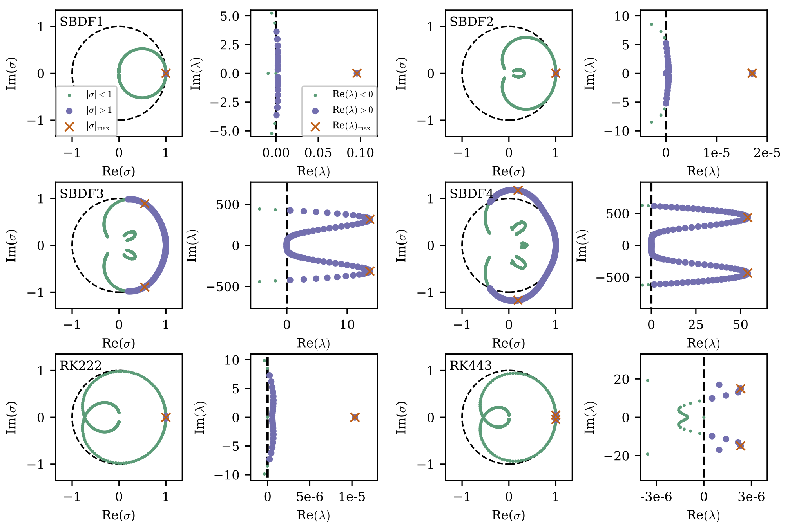
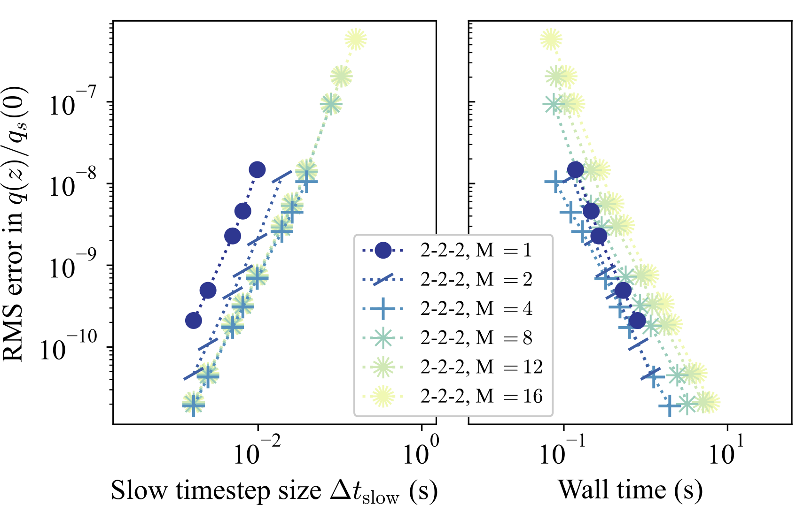
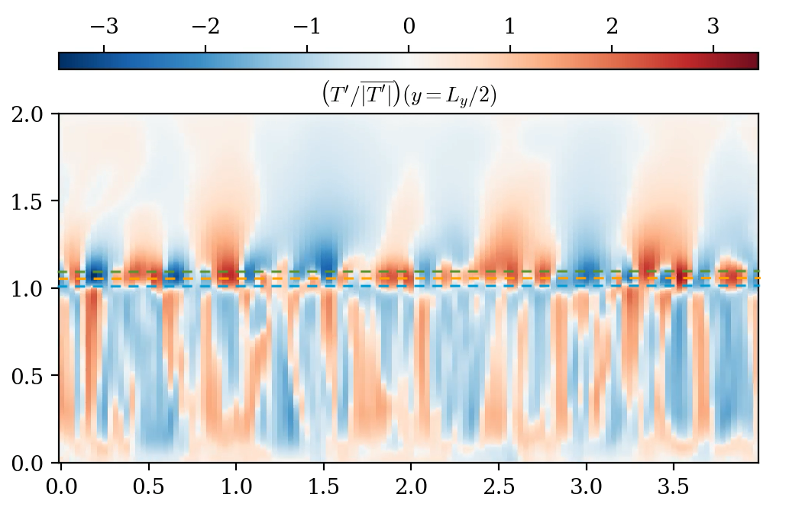

Welcome
I am a PhD Candidate in Applied Mathematics and NSF Graduate Research Fellow in my fifth year (2025-2026) at Northwestern University, where I am also a member of the Center for Interdisciplinary Exploration and Research in Astrophysics (CIERA). I study numerical methods for solving partial differential equations, and their application to problems in geophysics and astrophysics. I am advised by Daniel Lecoanet. I have also worked with Chris Vogl, Keaton Burns, and Anna Frishman, to name a few. Before beginning my graduate studies I worked with Carolyn Ernst, Muruhan Rathinam, and Jinglai Shen.
Current Research Interests
Polar vortex formation in differentially-rotating turbulence
Many planets in our solar system are home to interesting atmospheric dynamics: from our own jet streams and hurricanes here on Earth, to Jupiter's zonal flows and the famous Great Red Spot, a discovery dating back centuries. More recently, the NASA Juno mission observed clusters of vortices at Jupiter's North and South poles. Since then, models of polar vortex formation have seen renewed interest. It is generally thought that the rotation of the planet is an essential ingredient to stabilizing and confining these formations to the polar regions. However, studies have yet to provide conclusive evidence that rotation is a feasible stabilising mechanism in a realistic forced-dissipative setting. I am running simulations of polar vortex emergence in differentially-rotating 2D disk turbulence to determine what types of formations are realistic and to study their dependence on rotation.
Stability analysis of IMEX timestepping schemes

I use the pseudospectral code Dedalus which employs multi-step and multi-stage implicit-explicit (IMEX) timestepping schemes to discretize problems in time. The stability properties of these schemes are well understood in the context of linear theory, but there remain open questions when evolving nonlinear flows. Recently, I have used methods from multiscale asymptotics to develop an analytical framework to determine the stability of IMEX schemes when used to evolve nonlinear waves. A published manuscript on this work is published in the Journal of Computational Physics here, and can otherwise be found on the arxiv here. This analysis has so far been successfully applied to dispersive problems (e.g., soliton propagation), but future work can look to extend this analysis to problems with dissipation and to other classes of timestepping schemes.
Analysis of operator splittings for timestepping geophysical systems

In 2024 I had the opportunity to work in the Center for Applied Scientific Computing at Lawrence Livermore National Laboratory for 3 months. I researched and tested different timestepping operator splitting methods, which are used to couple the different physical processes included in the E3SM atmosphere model. An abstract describing what I presented at AGU24 can be found here. I am interested in comparing the performance of different types of operator splittings (multirate, IMEX, etc.) and their suitability for timestepping geophysical systems (e.g., climate models) when there are large separations in time scales.
Convective boundary mixing in massive stars

Models of stellar evolution rely on parameterizations that are primarily developed by studying dynamics in direct numerical simulations. Previous work (e.g., Anders et al. (2022)) has used 3D hydrodynamical simulations to study convective penetration, which is a source of uncertainty in current stellar evolution models. I am currently running 3D simulations to explore the effects of rotation on convective penetration, which previous studies have not yet incorporated.
Selected Publications
- B. A. Hyatt, D. Lecoanet, E. H. Anders, K. J. Burns, "Multiple scales analysis of a nonlinear timestepping instability in simulations of solitons", Journal of Computational Physics, vol. 531, p. 113923, 15 Jun 2025. (doi)
- E. H. Anders, D. Lecoanet, M. Cantiello, K. J. Burns, B. A. Hyatt, E. Kaufman, R. H. D. Townsend, B. P. Brown, G. M. Vasil, J. S. Oishi, A. S. Jermyn, "The photometric variability of massive stars due to gravity waves excited by core convection", Nature Astronomy, vol. 7, pp. 1228-1234, 27 Jul 2023. (doi)
For a full list, see my CV here.